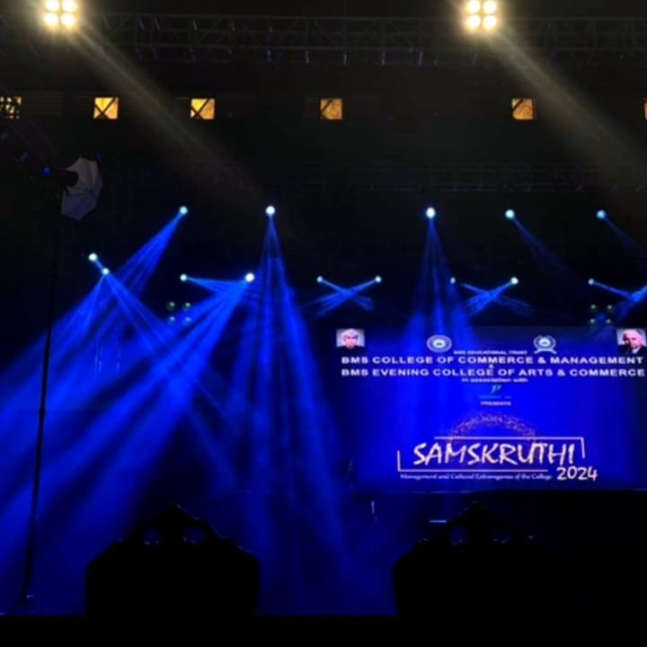
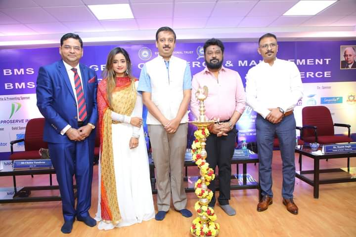
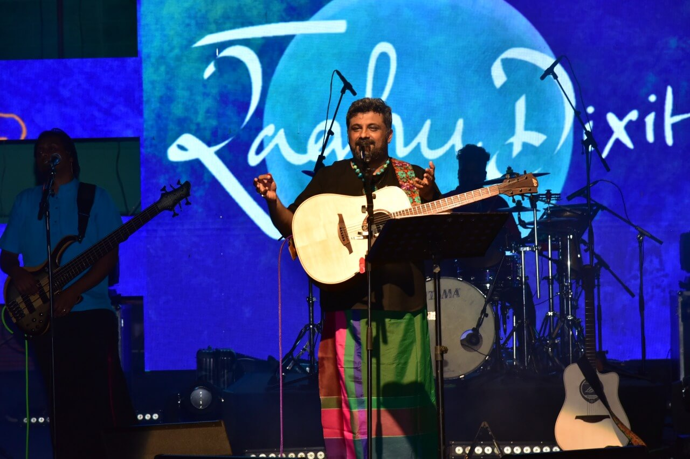
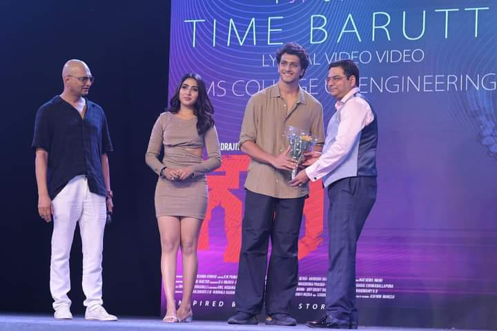
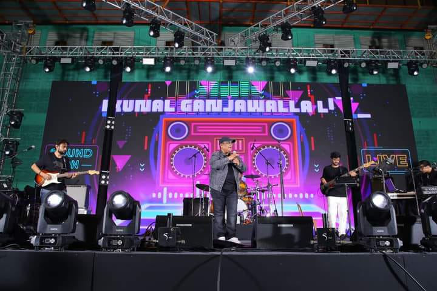
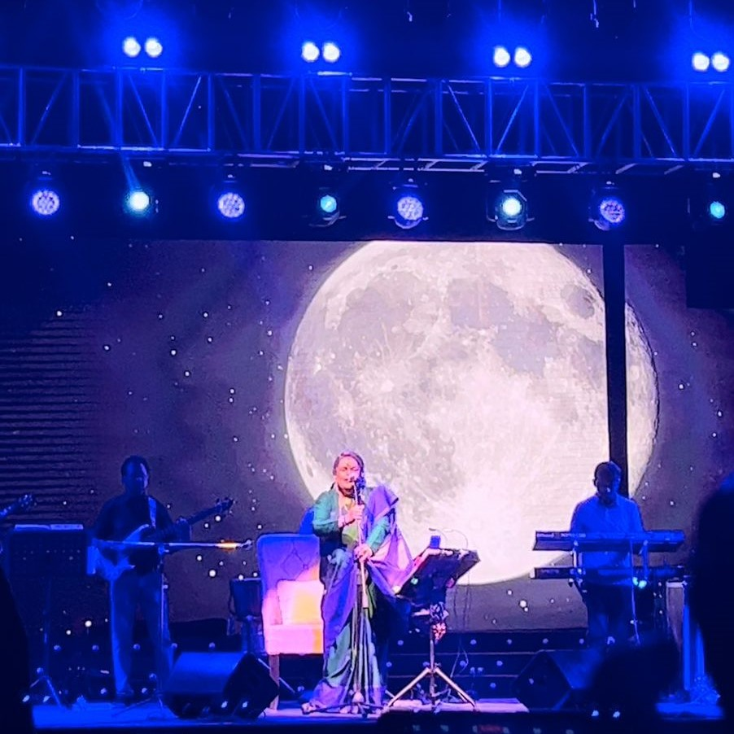
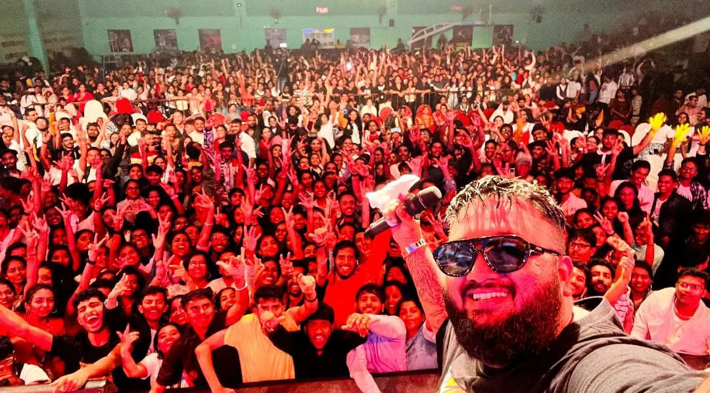

A three-day inter-collegiate fest “Samskruthi 2024” is being organised from May 9 to 11 by BMS College of Commerce and Management and BMS Evening College of Arts and Commerce Bengaluru in association with Proserve Inc.
The college fest will be inaugurated by Navarasa Nayaka Jaggesh, a renowned cinema actor and Rajya Sabha MP. The intercollegiate fest will have more than 300 colleges across India participating in 30 different management and cultural events. The last day of Samskruthi will witness a musical concert by Kunal Ganjawala, a leading Indian playback singer. The three-day programme will be presided over by Dr BS Ragini Narayan, donor trustee of BMS Educational Trust, and Aviram Sharma, chairman of BMS College of Commerce and Management.
Dr Pankaj Choudhary, Principal of BMS College of Commerce and Management, said, “Samskruthi is a platform for students to have fun and interact intellectually and creatively. Not only is this a good platform for the students, but also for the companies that take this opportunity to associate their brands and products with the power of youth. This inter-collegiate cultural event will witness all the leading colleges across India participating in the upcoming events, along with a spectacular musical concert by Kunal Ganjawala.”





